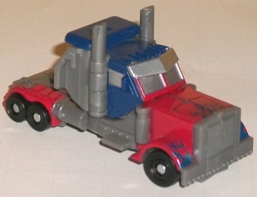
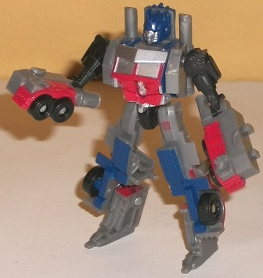
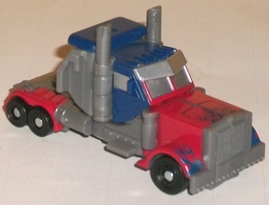
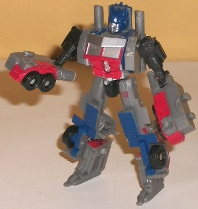
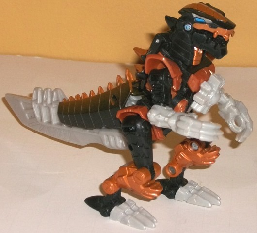
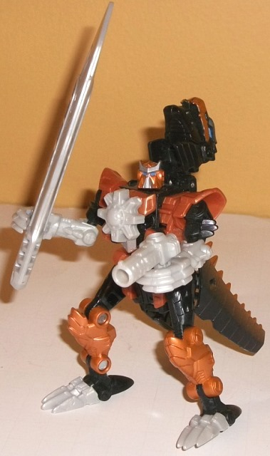

 
Allegiance: Autobot
Size : Legion
Difficulty of Transformation : Very Easy
Color Scheme : Moderately dark milky gray, dark flat blue, light red, and some metallic dark blue, silver and black
Individual Rating : 7.5
Price : $15 (U.S.)
(NOTE: Because this set is composed of repaints,
this is not a full-blown review. This mainly covers any changes made to
the set and the color scheme, and merely compares it to the original versions
of these molds. For a review on the original Legends RotF Optimus Prime,
go
here
. For a review on Energon Cruellock--
the mold used for Grimlock-- go
here
.)
 Optimus
Prime
Optimus
Prime


Allegiance:
Autobot
Size
: Legion
Difficulty of Transformation
: Very
Easy
Color Scheme
: Moderately dark milky
gray, dark flat blue, light red, and some metallic dark blue, silver and
black
Individual Rating
: 7.5
Like many of the older-mold
Optimus Prime and 'Bee redecos released for store exclusives for Age of
Extinction, this version of Optimus is more of a slight variant on the
original RotF Legends Optimus Prime than an outright redeco. All three
of his main colors-- gray, dark blue, and red-- are different from the
original, but only very slightly. Next to each other, even gray is the
only obvious one, being distinctly a darker shade of the color than the
lighter milky gray on the original RotF release. The red is just a tad
lighter than on the original, but not enough to make any real difference.
Conversely, the blue is just a tad darker and flatter, and the blue flame
paint apps on the front are a bit more metallic in their shading this time--
but again, this isn't enough to make any signficant difference. The only
change as far as paint apps go is that the abdomen is now mostly red with
a bit of silver in the middle, as opposed to being completely silver like
on the original. This is very much your average "Legion Optimus Prime"
toy, and can easily work as Optimus Prime from the original movie trilogy
just as well as the original release-- the AoE version, not so much.
No mold changes have
been made to this version of Optimus Prime.
 Grimlock
Grimlock


Allegiance:
Autobot
Size
: Scout
Difficulty of Transformation
: Very
Easy
Color Scheme
: Black, light milky
gray, metallic bronze, milky dull brownish bronze, and some metallic blue
and silver
Individual Rating
: 8.1
The larger toys in these
Wal-Mart exclusive 2-packs sure are from unexpectedly old molds! Energon
Cruellock-- the original release of this mold-- came out a
decade
before this redeco. As you'd expect, this mold has now been painted up
in the usual AoE Grimlock toy colors, with a bit more emphasis on black
because of the mold break-up. The base colors of the "core" of the figure
are black and a slightly duller shade of the same milky brownish bronze
plastic used on most other AoE Grimlock toys. The colors go well enough
together, but what REALLY helps Grimlock stand out visually are all the
metallic bronze paint apps-- his lower legs and back are covered in the
stuff, and there's a hefty amount of bronze fade along his tail as well,
and parts of both of his heads are also painted in the color. It looks
quite nice against the black, and in general is just an attractive shade
of the color. There's also a bit of silver paint on the dino eyebrows and
on the mouth and "ears" of the robot head (which, missing headcrest aside,
looks surpisingly similar to AoE Grimlock's, given how it was obviously
never intended to be the character), and a bit of blue for the eyes. The
blue is also a really nice shade, to the point where I wish it was used
just a tad more as an accent color in a few other places. This especially
goes for the really bland, light milky gray that is used for all the parts
of the mold that used to be translucent. Used in small does-- like on the
feet-- it doesn't look that bad, but having the lower arms and the entire
huge tail-sword unpainted looks pretty darned dull, especially in comparison
to the earlier versions' translucent plastic.
No mold changes have
been made to this version of Grimlock, though the Energon star is glued
over the spark crystal on the chest, presumably because it still has a
Decepticon symbol in it and Hasbro didn't feel like remolding that part
of the toy. (Though now that I think about it, it's odd there's no Autobot
symbol on this toy...)
This 2-pack isn't quite
as much of a steal and solid recommendation as the
Slug/Stinger
2-pack
, but both are pretty good molds. Grimlock is certainly the star
here, though, being a surprisingly old mold and in a generally neat color
scheme (excepting the big areas of light milky gray). If you want a movie-accurate
representation of the character, obviously you should look elsewhere--
but taken as its own toy, Grimlock looks pretty good, and if you don't
have the RotF Legends Prime mold yet, this is as good a version of it as
any.
Reviews by Beastbot